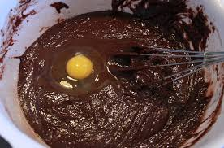
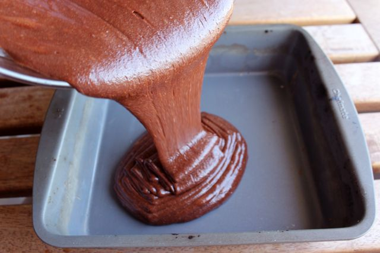
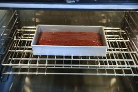

Click the photo to see the step that goes along with it to learn how to make brownies!
The first step to making brownies is to mix the powder in the box in a bowl with half a cup of water and a table spoon of oil. Wisk until the batter is fully mixed and creamy.

After adding the water and oil the next step is to crack one egg and add it to the batter. Mix the batter again until its creamy.

The third step is the grease a medium sized square pan with oil and pour the batter evenly across the pan.

After the batter is in the pan place is in an oven set to and already heated to 350 degrees Farenheit.As the brownies cook. Periodically check to see if the brownies are cooked by inserting a toothpick into the batter.
Once they are finished take the pan out of the oven and let the brownies cool for 30 minutes. Use a plastic knife to cut the brownies into squares.